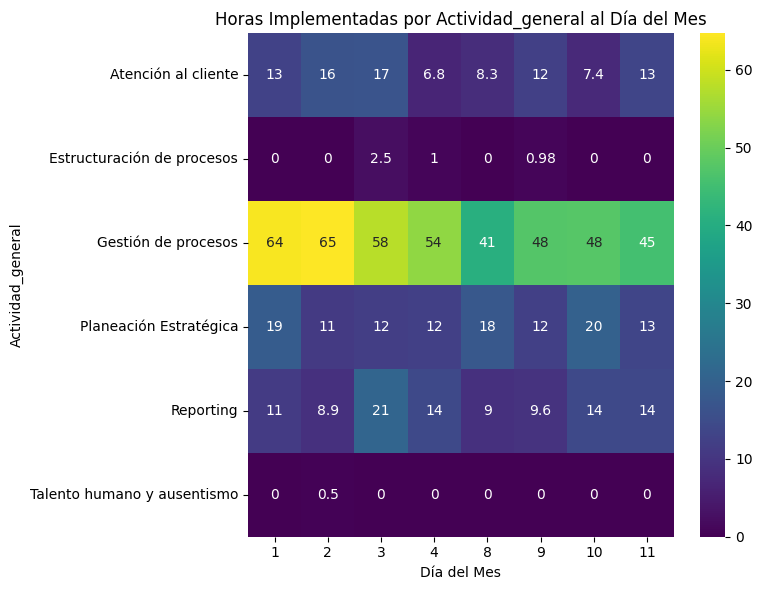
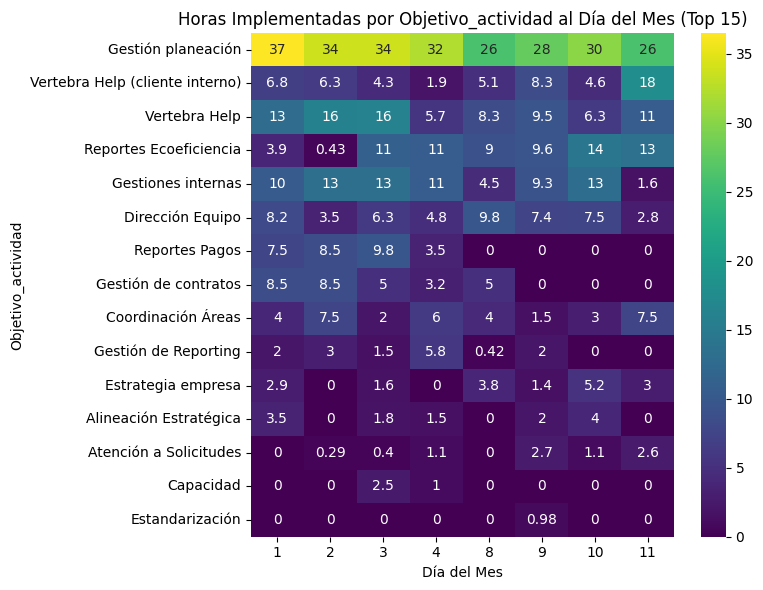
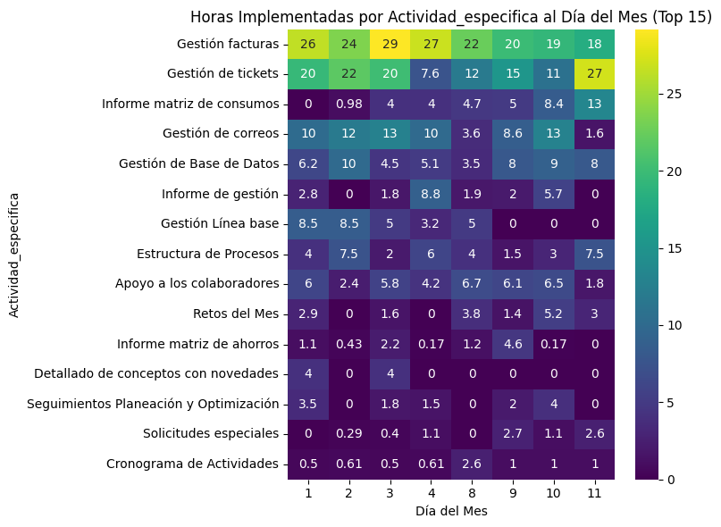

Rendimientos Administrativo y financiero#
Análisis descriptivo#
Comparacion ciclos#
Se muestra el total de horas consumidas historico.
No artists with labels found to put in legend. Note that artists whose label start with an underscore are ignored when legend() is called with no argument.
Se muestra el total histórico de colaboradores con registro de actividades.
No artists with labels found to put in legend. Note that artists whose label start with an underscore are ignored when legend() is called with no argument.
Vertical#
Total horas por vertical
| Vertical | Hr_Implementadas | Porcentaje | Porcentaje_Acumulado | |
|---|---|---|---|---|
| 0 | Administrativa | 0.0 | NaN | NaN |
No artists with labels found to put in legend. Note that artists whose label start with an underscore are ignored when legend() is called with no argument.
Contratos#
Total HH por contrato
| Contrato | Hr_Implementadas | Porcentaje | Porcentaje_Acumulado |
|---|
No artists with labels found to put in legend. Note that artists whose label start with an underscore are ignored when legend() is called with no argument.
Horas por contrato por día
---------------------------------------------------------------------------
KeyError Traceback (most recent call last)
Cell In[28], line 23
20 heatmap_data = data_resumen.pivot(index='Contrato', columns='Dia del Mes', values='Hr_Implementadas')
22 # Reorganizar las filas del DataFrame de acuerdo a los contratos ordenados
---> 23 heatmap_data = heatmap_data.loc[contratos_ordenados]
25 sns.heatmap(heatmap_data, cmap='viridis', annot=False, fmt='s') # Mostrar valores y formato de cadena
26 plt.xlabel('Día del Mes')
File c:\Users\Admon\Documents\Vertebra\Modelos-V\Notebook_Informe_rendimientos\env\lib\site-packages\pandas\core\indexing.py:1103, in _LocationIndexer.__getitem__(self, key)
1100 axis = self.axis or 0
1102 maybe_callable = com.apply_if_callable(key, self.obj)
-> 1103 return self._getitem_axis(maybe_callable, axis=axis)
File c:\Users\Admon\Documents\Vertebra\Modelos-V\Notebook_Informe_rendimientos\env\lib\site-packages\pandas\core\indexing.py:1332, in _LocIndexer._getitem_axis(self, key, axis)
1329 if hasattr(key, "ndim") and key.ndim > 1:
1330 raise ValueError("Cannot index with multidimensional key")
-> 1332 return self._getitem_iterable(key, axis=axis)
1334 # nested tuple slicing
1335 if is_nested_tuple(key, labels):
File c:\Users\Admon\Documents\Vertebra\Modelos-V\Notebook_Informe_rendimientos\env\lib\site-packages\pandas\core\indexing.py:1272, in _LocIndexer._getitem_iterable(self, key, axis)
1269 self._validate_key(key, axis)
1271 # A collection of keys
-> 1272 keyarr, indexer = self._get_listlike_indexer(key, axis)
1273 return self.obj._reindex_with_indexers(
1274 {axis: [keyarr, indexer]}, copy=True, allow_dups=True
1275 )
File c:\Users\Admon\Documents\Vertebra\Modelos-V\Notebook_Informe_rendimientos\env\lib\site-packages\pandas\core\indexing.py:1462, in _LocIndexer._get_listlike_indexer(self, key, axis)
1459 ax = self.obj._get_axis(axis)
1460 axis_name = self.obj._get_axis_name(axis)
-> 1462 keyarr, indexer = ax._get_indexer_strict(key, axis_name)
1464 return keyarr, indexer
File c:\Users\Admon\Documents\Vertebra\Modelos-V\Notebook_Informe_rendimientos\env\lib\site-packages\pandas\core\indexes\base.py:5877, in Index._get_indexer_strict(self, key, axis_name)
5874 else:
5875 keyarr, indexer, new_indexer = self._reindex_non_unique(keyarr)
-> 5877 self._raise_if_missing(keyarr, indexer, axis_name)
5879 keyarr = self.take(indexer)
5880 if isinstance(key, Index):
5881 # GH 42790 - Preserve name from an Index
File c:\Users\Admon\Documents\Vertebra\Modelos-V\Notebook_Informe_rendimientos\env\lib\site-packages\pandas\core\indexes\base.py:5938, in Index._raise_if_missing(self, key, indexer, axis_name)
5936 if use_interval_msg:
5937 key = list(key)
-> 5938 raise KeyError(f"None of [{key}] are in the [{axis_name}]")
5940 not_found = list(ensure_index(key)[missing_mask.nonzero()[0]].unique())
5941 raise KeyError(f"{not_found} not in index")
KeyError: "None of [CategoricalIndex(['Davivienda - Pagos', 'Vertebra - N/A.'], categories=['Davivienda - Pagos', 'Vertebra - N/A.'], ordered=False, dtype='category', name='Contrato')] are in the [index]"
<Figure size 1000x800 with 0 Axes>
---------------------------------------------------------------------------
ValueError Traceback (most recent call last)
Cell In[15], line 28
25 # Pivotear los datos para tener los días del mes en el eje x y los contratos en el eje y
26 heatmap_data = data_resumen_top_10.pivot(index='Contrato', columns='Dia del Mes', values='Hr_Implementadas')
---> 28 sns.heatmap(heatmap_data, cmap='viridis', annot=True) # Mostrar valores y formato de cadena
29 plt.xlabel('Día del Mes')
30 plt.ylabel('Contrato')
File c:\Users\Admon\Documents\Vertebra\Modelos-V\Notebook_Informe_rendimientos\env\lib\site-packages\seaborn\matrix.py:446, in heatmap(data, vmin, vmax, cmap, center, robust, annot, fmt, annot_kws, linewidths, linecolor, cbar, cbar_kws, cbar_ax, square, xticklabels, yticklabels, mask, ax, **kwargs)
365 """Plot rectangular data as a color-encoded matrix.
366
367 This is an Axes-level function and will draw the heatmap into the
(...)
443
444 """
445 # Initialize the plotter object
--> 446 plotter = _HeatMapper(data, vmin, vmax, cmap, center, robust, annot, fmt,
447 annot_kws, cbar, cbar_kws, xticklabels,
448 yticklabels, mask)
450 # Add the pcolormesh kwargs here
451 kwargs["linewidths"] = linewidths
File c:\Users\Admon\Documents\Vertebra\Modelos-V\Notebook_Informe_rendimientos\env\lib\site-packages\seaborn\matrix.py:163, in _HeatMapper.__init__(self, data, vmin, vmax, cmap, center, robust, annot, fmt, annot_kws, cbar, cbar_kws, xticklabels, yticklabels, mask)
160 self.ylabel = ylabel if ylabel is not None else ""
162 # Determine good default values for the colormapping
--> 163 self._determine_cmap_params(plot_data, vmin, vmax,
164 cmap, center, robust)
166 # Sort out the annotations
167 if annot is None or annot is False:
File c:\Users\Admon\Documents\Vertebra\Modelos-V\Notebook_Informe_rendimientos\env\lib\site-packages\seaborn\matrix.py:202, in _HeatMapper._determine_cmap_params(self, plot_data, vmin, vmax, cmap, center, robust)
200 vmin = np.nanpercentile(calc_data, 2)
201 else:
--> 202 vmin = np.nanmin(calc_data)
203 if vmax is None:
204 if robust:
File c:\Users\Admon\Documents\Vertebra\Modelos-V\Notebook_Informe_rendimientos\env\lib\site-packages\numpy\lib\nanfunctions.py:343, in nanmin(a, axis, out, keepdims, initial, where)
338 kwargs['where'] = where
340 if type(a) is np.ndarray and a.dtype != np.object_:
341 # Fast, but not safe for subclasses of ndarray, or object arrays,
342 # which do not implement isnan (gh-9009), or fmin correctly (gh-8975)
--> 343 res = np.fmin.reduce(a, axis=axis, out=out, **kwargs)
344 if np.isnan(res).any():
345 warnings.warn("All-NaN slice encountered", RuntimeWarning,
346 stacklevel=2)
ValueError: zero-size array to reduction operation fmin which has no identity
<Figure size 800x600 with 0 Axes>
Actividad general#
| Actividad_general | Hr_Implementadas | Porcentaje | Porcentaje_Acumulado |
|---|
No artists with labels found to put in legend. Note that artists whose label start with an underscore are ignored when legend() is called with no argument.

Objetivo de la actividad#
| Objetivo_actividad | Hr_Implementadas | Porcentaje | Porcentaje_Acumulado | |
|---|---|---|---|---|
| 18 | Gestión planeación | 246.0 | 33.33 | 33.33 |
| 27 | Vertebra Help | 85.0 | 11.52 | 44.85 |
| 9 | Gestiones internas | 76.0 | 10.30 | 55.15 |
| 22 | Reportes Ecoeficiencia | 72.0 | 9.76 | 64.91 |
| 28 | Vertebra Help (cliente interno) | 55.0 | 7.45 | 72.36 |
| 6 | Dirección Equipo | 50.0 | 6.78 | 79.14 |
| 4 | Coordinación Áreas | 35.0 | 4.74 | 83.88 |
| 14 | Gestión de contratos | 30.0 | 4.07 | 87.95 |
| 25 | Reportes Pagos | 29.0 | 3.93 | 91.88 |
| 8 | Estrategia empresa | 18.0 | 2.44 | 94.32 |
| 13 | Gestión de Reporting | 15.0 | 2.03 | 96.35 |
| 0 | Alineación Estratégica | 13.0 | 1.76 | 98.11 |
| 1 | Atención a Solicitudes | 8.0 | 1.08 | 99.19 |
| 3 | Capacidad | 4.0 | 0.54 | 99.73 |
| 21 | Mesa de trabajo | 1.0 | 0.14 | 99.87 |
| 7 | Estandarización | 1.0 | 0.14 | 100.01 |
No artists with labels found to put in legend. Note that artists whose label start with an underscore are ignored when legend() is called with no argument.

Actividad especifica#
| Actividad_especifica | Hr_Implementadas | Porcentaje | Porcentaje_Acumulado | |
|---|---|---|---|---|
| 63 | Gestión facturas | 186.0 | 25.17 | 25.17 |
| 62 | Gestión de tickets | 134.0 | 18.13 | 43.30 |
| 60 | Gestión de correos | 72.0 | 9.74 | 53.04 |
| 59 | Gestión de Base de Datos | 54.0 | 7.31 | 60.35 |
| 79 | Informe matriz de consumos | 41.0 | 5.55 | 65.90 |
| 7 | Apoyo a los colaboradores | 39.0 | 5.28 | 71.18 |
| 53 | Estructura de Procesos | 35.0 | 4.74 | 75.92 |
| 57 | Gestión Línea base | 30.0 | 4.06 | 79.98 |
| 73 | Informe de gestión | 23.0 | 3.11 | 83.09 |
| 100 | Retos del Mes | 18.0 | 2.44 | 85.53 |
| 115 | Seguimientos Planeación y Optimización | 13.0 | 1.76 | 87.29 |
| 78 | Informe matriz de ahorros | 10.0 | 1.35 | 88.64 |
| 122 | Solicitudes especiales | 8.0 | 1.08 | 89.72 |
| 40 | Cronograma de Actividades | 8.0 | 1.08 | 90.80 |
| 45 | Detallado de conceptos con novedades | 8.0 | 1.08 | 91.88 |
| 47 | Detallado de conceptos sin novedades Vs Reclas... | 7.0 | 0.95 | 92.83 |
| 80 | Informe reclamaciones | 7.0 | 0.95 | 93.78 |
| 109 | Seguimiento área tickets | 6.0 | 0.81 | 94.59 |
| 48 | Detallado de pagos | 4.0 | 0.54 | 95.13 |
| 38 | Consultas y solicitudes | 4.0 | 0.54 | 95.67 |
| 35 | Construcción línea base | 4.0 | 0.54 | 96.21 |
| 93 | Reclasificación TV y Telefonía | 4.0 | 0.54 | 96.75 |
| 105 | Score de clientes | 4.0 | 0.54 | 97.29 |
| 83 | Mesa de Trabajo | 3.0 | 0.41 | 97.70 |
| 64 | Gestión prestadores de servicio | 2.0 | 0.27 | 97.97 |
| 74 | Informe de huella de carbono | 2.0 | 0.27 | 98.24 |
| 75 | Informe de monitoreo | 2.0 | 0.27 | 98.51 |
| 92 | Reclasificación | 2.0 | 0.27 | 98.78 |
| 46 | Detallado de conceptos sin novedades | 2.0 | 0.27 | 99.05 |
| 4 | Alumbrado publico | 2.0 | 0.27 | 99.32 |
| 76 | Informe de tarifas | 2.0 | 0.27 | 99.59 |
| 84 | Mesa de trabajo | 1.0 | 0.14 | 99.73 |
| 124 | VertebraHelp | 1.0 | 0.14 | 99.87 |
| 11 | Auditoria | 1.0 | 0.14 | 100.01 |
No artists with labels found to put in legend. Note that artists whose label start with an underscore are ignored when legend() is called with no argument.

Relación entre variables#
En este apartado se analiza como interactuan los tipos de actividad y adicional los roles con las actividades especificas.
Relacion actividades#
Se muestra la relacion entre Actividad_general, Objetivo_actividad y Actividad_especifica, en este caso solo para el top 15 de actividades especificas.
Warning: When cdn_resources is 'local' jupyter notebook has issues displaying graphics on chrome/safari. Use cdn_resources='in_line' or cdn_resources='remote' if you have issues viewing graphics in a notebook.
Relación por proceso#
Aqui se muestra como se relacionan los procesos con las actividades y con los contratos.